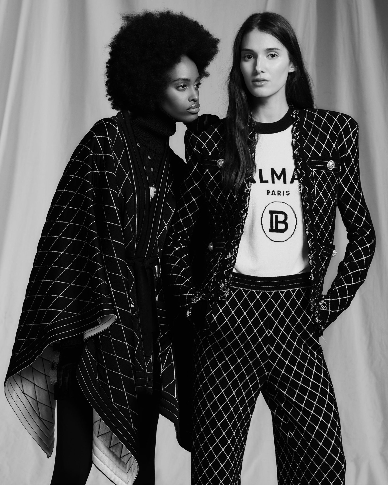

- Italy -
Fashion
Lets Talk About Fashion
Italy is well known for its fashion.
Italy is one of the leading countries in fashion design, alongside France, the United States and the United
Kingdom. Fashion has always been an important part of the country's cultural life and society, and Italians
are
well known for their attention of dressing-up well; "la bella figura", or good impression, remains
traditional.
Italian fashion is linked to the most generalized concept of "Made in Italy", a merchandise brand expressing
excellence of creativity and craftsmanship. Italian luxury goods are renowned for the quality of the
textiles
and the elegance and refinement of their construction. Many French, British and American high-top luxury
brands
(such as Chanel, Dior, Balmain and the main line of Ralph Lauren) also rely on Italian craft factories,
located
in highly specialized areas in the metropolitan area of Naples and in the centre-north of Italy (Tuscany,
Marche, Veneto and Piedmont), to produce parts of their apparel and accessories.

Luxury sportswear and streetwear have become general fashion trends, mixing high and low, formal and active
style in one look and also in this segment Italy, apart from big luxury brands focused on ready to wear (or
couture) developing their own streetstyle lines or items such as Gucci, Fendi, Moschino and Prada or top
brands
with a strong sporty heritage like Bikkembergs, has got a few high end companies focused on this style like
Marcelo Burlon County of Milan, GCDS, OFF White directed by American Virgil Abloh but based in Milan, Palm
Angels, Danilo Paura, Stone island. In sportswear some of the most prominent houses are Diadora, Fila, Kappa
and
Lotto.
The Milan Fashion Week takes place twice a year after the London Fashion Week and before the Paris Fashion
Week. It is scheduled as the third of the four most important and global international ready-to-wear fashion
weeks of the calendar during the so-called fashion month. Dates are determined by the Camera Nazionale della
Moda Italiana. Some of the locations where fashion shows are held are Milan's Palazzo Reale, Palazzo
Serbelloni, Padiglione Visconti, Spazio delle Cavallerizze at Leonardo Da Vinci museum and many others.